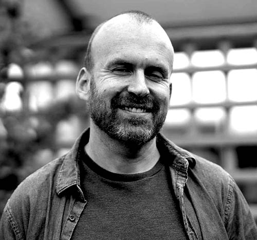

MATT HAIG (sinh năm 1975) là một nhà báo và tiểu thuyết gia người Anh. Các tác phẩm của ông bao gồm cả hư cấu và phi hư cấu, viết cho đối tượng từ trẻ em tới người lớn, đã bán được hơn ba triệu bản trên toàn thế giới và được dịch ra hơn bốn mươi ngôn ngữ khác nhau. Ông đã ba lần được đề cử cho giải thưởng văn họ Carnegie Medal. Haig hiện sống tại Brighton (Sussex, Anh) cùng vợ, hai con và một chú chó.
Các tác phẩm của Matt Haig do Nhã Nam phát hành:
Thư viện Nửa Đêm (2021)
Làm sao dừng lại thời gian (2022)
Lý do để sống tiếp (2023)
❖ ❖ ❖
Cuốn hồi ký về quãng thời gian vượt qua trầm cảm của Matt Haig, tác giả Thư viện Nửa Đêm và Làm sao dừng lại thời gian.
Ở tuổi 24, trong khi chịu đựng một cơn trầm cảm nặng nề, Matt Haig đã nghĩ đến việc chấm dứt đời mình. Thế nhưng, đứng bên bờ vực thẳm, đã có những điều giữ anh lại với cuộc đời. Lý do để sống tiếp là câu chuyện chân thật về hành trình từng phút, từng ngày anh vượt qua căn bệnh, nhờ vào việc đọc, việc viết, nhờ vào tình yêu của cha mẹ cùng người bạn gái Andrea, mà nay đã trở thành vợ anh.
Cách nhìn nhận thẳng thắn vào chính nỗi đau của anh vừa truyền cảm hứng cho những ai đang gặp khó khăn hoặc lo sợ với bệnh trầm cảm, vừa soi sáng cho những người còn hoang mang về nó. Trên hết, cuốn sách còn chứa chan niềm hy vọng, vì câu nói cũ dù sáo nhưng vẫn đúng: luôn có ánh sáng cuối đường hầm. Và những điều nhỏ bé, những khoảng lặng, cùng tình yêu, luôn là những lý do để tiếp tục sống.
❖ ❖ ❖
“Ghi chép của Haig về giai đoạn suy sụp thần kinh và hồi phục của chính mình là một trong những cuốn sách mới mẻ, sáng tỏ và thực tế nhất về trầm cảm...”
SUNDAY TIMES
“ [Lý do để sống tiếp] là một hồi đáp hết sức sáng tạo, cá nhân tới một giai đoạn khủng hoảng tuyệt đối, và là một ghi chép về những điều đã kéo một người trở lại từ miệng vực.”
GUARDIAN
“Một cuốn sách chân thật, dịu dàng và đầy cảm hứng về bệnh trầm cảm.”
SUNDAY EXPRESS